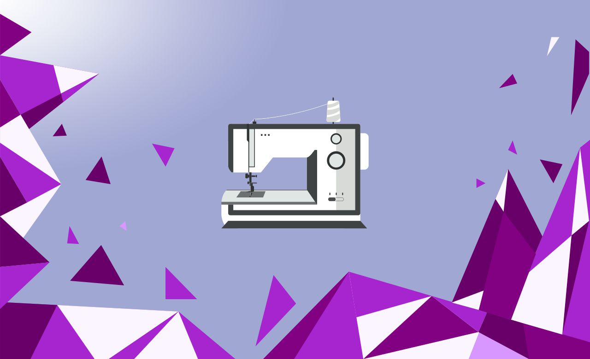

Aplikasi Kasir Toko dan Minimarket yang Memiliki Fitur Lebih Lengkap dan Mudah Digunakan Kelola Usaha Toko dan Minimarket Anda Lebih Mudah dengan Aplikasi Kasir RZF Software
❌Transaksi penjualan ribet karena masih menggunakan cara manual
❌Laporan keuangan tidak terkelola dengan baik
❌Kesulitan mengetahui laporan laba rugi
❌Piutang tidak terkontrol dan tidak tertagih
❌Berhitung masih menggunakan kalkulator
✔ Rekap laporan keuangan menjadi lebih praktis
✔ Piutang pelanggan terkontrol dengan baik
✔ Transaksi penjualan jadi lebih cepat dan fleksibel
✔ Fitur penjualan dan laporan yang lengkap
✔ Laporan laba rugi menjadi lebih akurat
01 Stok Opname Tanpa Tutup Toko
Kemampuan untuk melakukan stok opname tanpa
harus tutup toko, karena sudah terintegrasi dengan
perangkat PDT sehingga dapat menjalankan transaksi
jual beli meskipun sedang melakukan stok opname.
02 ersedia Fitur Multisatuan & Multiharga
Dengan fitur multisatuan akan memudahkan Anda
untuk mengelola barang yang memiliki satuan
bertingkat, seperti pcs, lusin atau box. Dan berikan
harga terbaik untuk pelanggan anda yang disesuaikan
dengan jumlah barang yang pelanggan anda beli.
✔ Sistem Aplikasi Toko
✔ Support Instalasi dan Training
✔ Free Akses Member Area
✔ Free Layanan Maintenance 2 Bulan
✔ Full Support Sistem
✔ Garansi Sistem 1 Tahun
Fitur multisatuan ini dapat membantu dalam
proses transaksi penjualan yang memiliki
satuan bertingkat menjadi lebih cepat dan mudah
karena satuan yang digunakan dalam penjualan sudah di kelompokkan dalam fitur multisatuan.